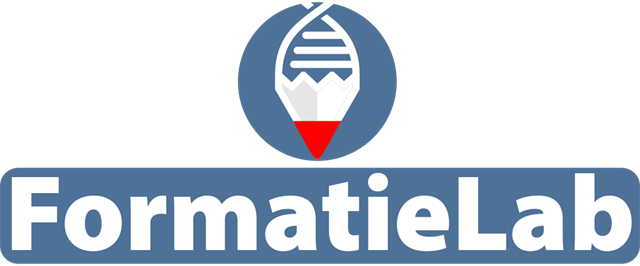

| Partij | Zetels | Kies | Uit |
|---|
Lab staat aan: pas de zetels aan en zie direct welke meerderheden er ontstaan of verdwijnen.
Eerste Kamer
Mogelijke meerderheden
Beste formatie voor (max. 3 thema's):

Welke partijen kunnen samen regeren, wat gaan ze dan doen, en hoe stemmen ze echt? Zo zie je wat je stem kan betekenen.
| Partij | Zetels | Kies | Uit |
|---|
Lab staat aan: pas de zetels aan en zie direct welke meerderheden er ontstaan of verdwijnen.
Hoe vaak stemden deze partijen echt hetzelfde over moties, amendementen en wetten? Gebaseerd op alle stemmingen in de huidige Tweede Kamer, niet op inschattingen.
Welke echte kabinetten sinds 2002 hadden (deels) dezelfde partijen, hoe lang hielden ze het vol, en wat deden ze echt per thema? Naast elkaar met de verwachting voor jouw coalitie.